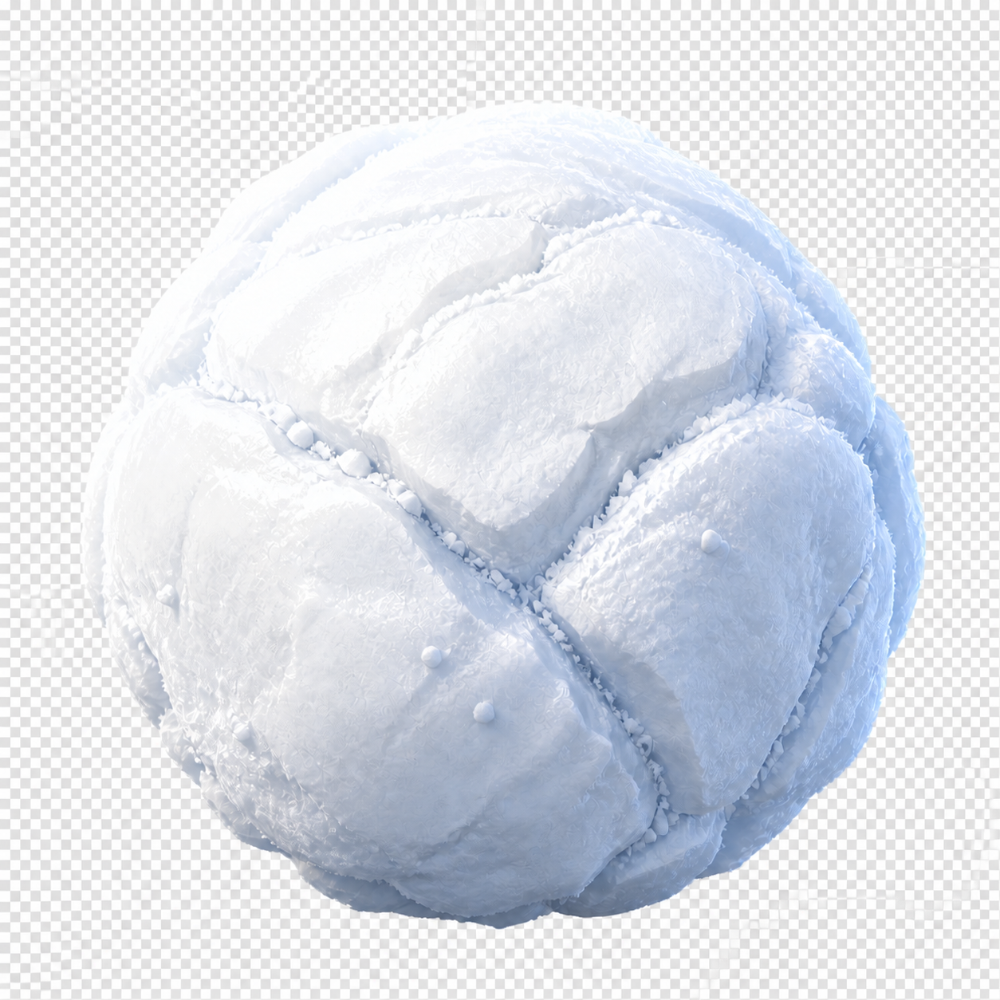
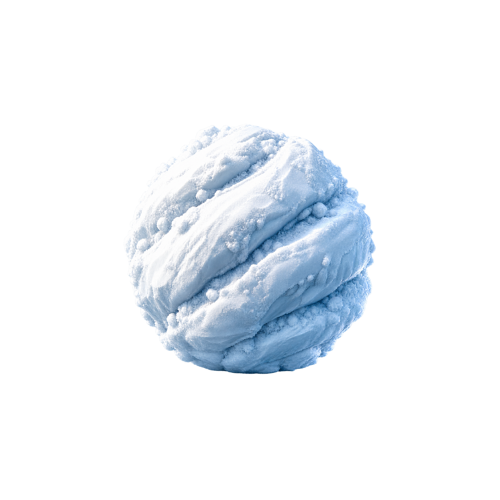
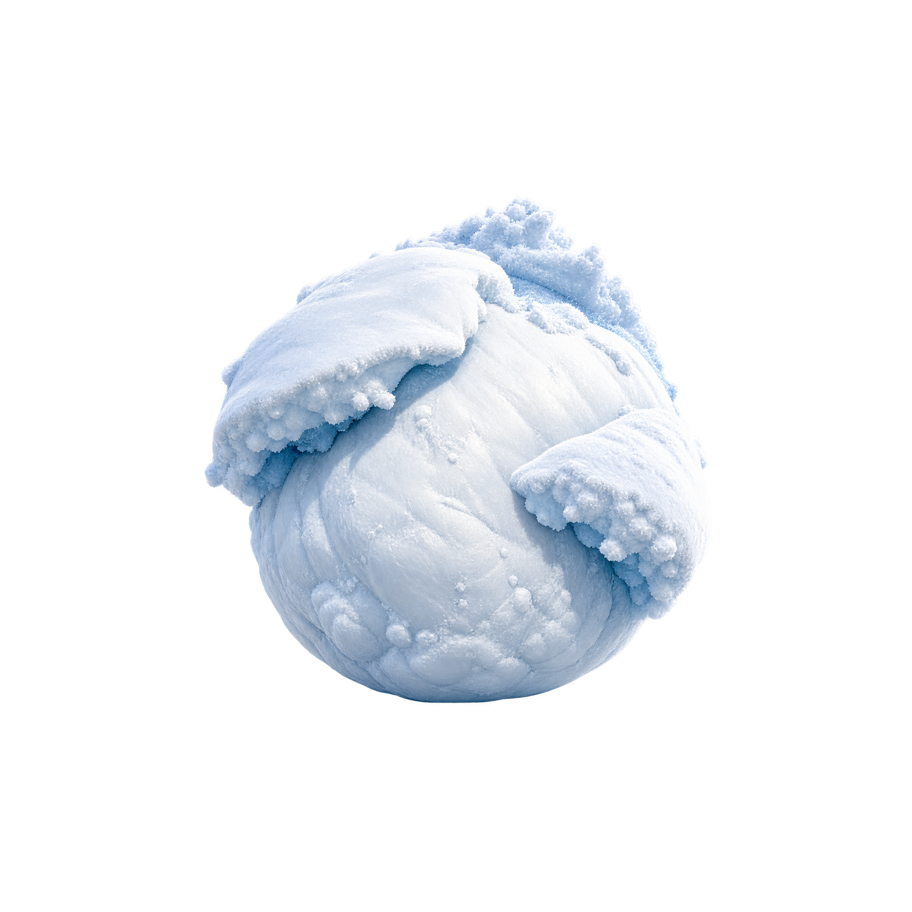

Candidate A
Snowmass Leviathan
A low monumental near-sphere assembled from a handful of enormous compressed snow slabs and broad soft valleys. The most literal giant-snowball read.
Exactly three concept directions for selection. These are non-pixel concept masters under the gameplay-ball pixel-guideline exemption. Runtime adaptation waits for explicit user selection.
Technical exception: Candidate A remains RGB with a baked checkerboard after its one permitted extraction retry. B and C are genuine transparent RGBA masters. No destructive masking was applied.

A low monumental near-sphere assembled from a handful of enormous compressed snow slabs and broad soft valleys. The most literal giant-snowball read.

A dense rolling colossus organized by diagonal accumulation bands, crushed-powder shelves, and an over-compressed lower hemisphere.

An exposed dense core under short wind-packed mantle plates, deep cool occlusion, and a compact attached powder crown. The most dramatic direction.